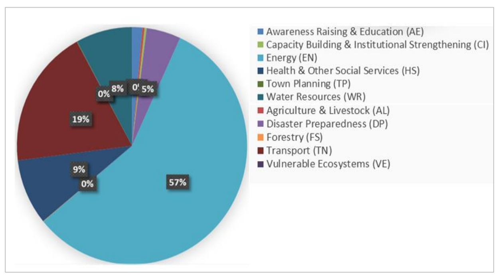
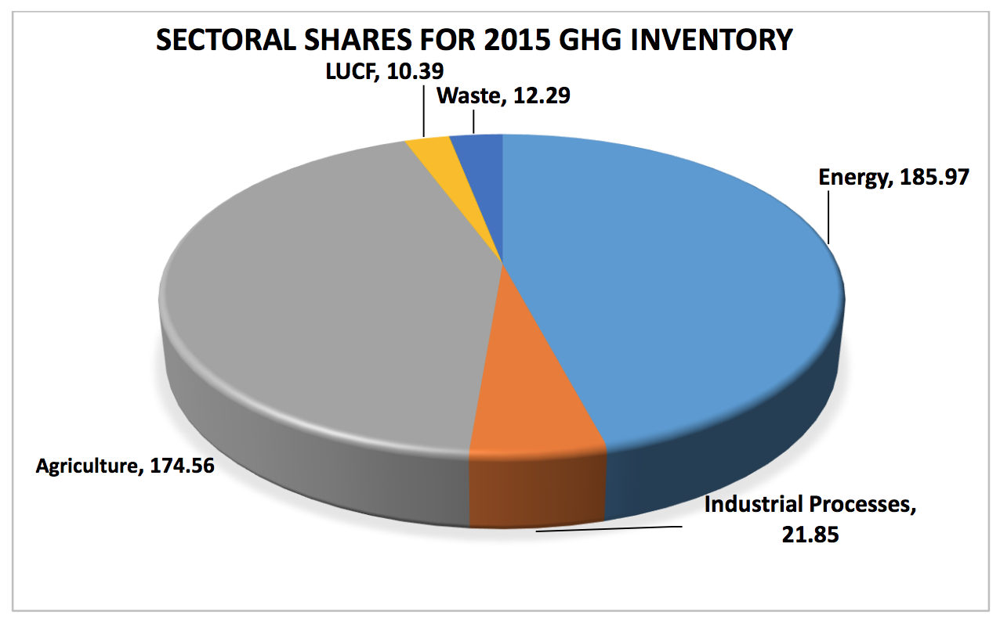

Universally eulogized as a panacea for global warming by limiting the global temperature increase to between 1.5 - 2.0 degrees Centigrade, the landmark Paris Agreement will enter into force on November 04, 2016, a month after the 55/55 ratification threshold was reached. Pakistan’s ratification is also envisaged before the 22nd Conference of the Parties (COP 22) of the UNFCCC (United Nations Framework Convention on Climate Change).
As part of the international climate policy regime, national governments are obligated to submit their Intended Nationally Determined Contributions to achieve stabilization of GHG in the atmosphere, with a timeframe that adequately allows for adaptation to climate change. Thus, an INDC essentially indicates a country’s contribution to achievement of the universal target set in the Paris Agreement and the accompanying compliance mechanism at country level.
Pakistan’s vulnerability to adverse impacts of climate change is well established and widely recognized. Despite Pakistan’s diminutive contribution to global GHG emissions, it is among the top ten most climate-affected countries of the world, as indicated by the Global Climate Risk Index developed by Germanwatch. Moreover, these adverse impacts of climate change are not in the distant future but are imminent. Indeed, these are already occurring as Pakistan has started suffering with ever-increasing frequency and ferocity of climate-induced catastrophes. Studies and assessments undertaken by the National Disaster Management Authority (NDMA) show that extreme climate events between 1994 and 2013 have resulted in an average annual economic loss of almost US dollars 4 billion. The last five floods (2010-2014) have resulted in monetary losses of over US$ 18 billion with 38.12 million people affected, 3.45 million houses damaged and 10.63 million acres of crops destroyed. Likewise, over 1200 people lost their lives due to the unprecedented heat wave in Karachi in 2015.
The response of the Government of Pakistan to climate change is already substantial. In spite of the country’s financial constraints, estimated federal climate-related expenditure was between 5.8 and 7.6 percent of the total expenditures in the federal budget last year. In the days to come, this climate-related expenditure is expected to increase further, primarily due to the likely increase in the frequency and intensity of the climate induced disasters. Needless to say, if there were no adverse climate change impacts, this budget could have been spent on education, health and poverty alleviation of the people of Pakistan.
Pak-INDC (Pakistan’s Intended Nationally Determined Contribution) is rooted in the country’s strategic plan ‘Vision 2025’. It is aligned with the respective policies, plans and sectoral growth targets set by various ministries and other government entities. Similarly, potential impacts of key development plans and projects, such as measures being undertaken to address current energy shortages and contributions to economic growth partly due to China-Pakistan Economic Corridor (CPEC) have been taken into consideration. Pak-INDC presents the overall GHG emissions profile and future emission projections, by considering both the present and future socio-economic parameters, changes in the demographic dynamics and emerging energy needs. It also describes mitigation and adaptation measures already being implemented in Pakistan and discusses the challenges and difficulties being faced and those likely to be confronted in coming years.
Based on the latest draft GHG Inventory of Pakistan (2014-15), growth in emissions of different sectors has been fairly consistent. Over the last twenty one years (1994-2015), the overall increase in the emissions has been approximately 123 percent, with energy and agriculture sectors accounting for about 90 percent of total emissions. While the historical trend of increase in emissions has so far been fairly consistent, the envisaged economic growth and increasingly conducive macro-economic environment are likely to amplify future emissions.
Future projections for the period 2015-30 show a steady increase in emissions due to the ambitious plans of the present government to spark economic activity through large-scale investments in energy, communication and industrial infrastructure. The forecasted economic growth is considered to be historically unprecedented and unmatched. Accordingly, future emissions of the country will increase manifold. Consistent with historical trends, both energy and agriculture sectors are predicted to remain predominant in GHG emissions, whereas significant increase is also expected in other sectors like industrial processes and waste.
At a time when future emissions are set to grow rapidly, the country also offers a huge potential for mitigation in almost all sectors of the economy. Based on economic analyses, a reduction of up to 20 percent in the projected emission figures for 2030 would require an investment of approximately US$ 40 billion, calculated at current prices. Similarly, a reduction of 15 percent in GHG emissions amounts to US$ 15.6 billion; whereas a 10 percent reduction is calculated as US$ 5.5 billion. It must be underscored that under the CBDR (common but differentiated responsibilities) principle of the UNFCCC Paris Agreement, the indicated mitigation potential can only be realized through international support in the form of financial grants, technical assistance, technology development and transfer and capacity building.
Pakistan being highly vulnerable to extreme climate events is into a state of forced adaptation. There is a huge potential for adaptation in Pakistan, particularly in strengthening and fortifying the flood infrastructure including water reservoirs and water channels. This would involve enhancing resilience of local communities to the adverse impacts of climate change. According to a national study, Pakistan’s adaptation need is between U$ 7 to U$ 14 billion/annum.
Low abatement cost coupled with prospects for climate-resilient investment in energy, infrastructure, industrial processes etc. qualify Pakistan as one of the promising carbon investment markets in the world.
In consideration of projected future emissions and potential for mitigation, Pakistan offers different options as part of its INDC for emission reduction, subject to the availability of Finance, Technology Development & Transfer and Capacity Building by the international community.
The Government of Pakistan presents this INDC with affirmation of the principles of global climate regime and hopes that the Common But Differentiated Responsibilities (CBDR) principle will enable its people to enjoy a future that is much less vulnerable than the present.
The Pak-INDC Report is being submitted by Pakistan in compliance with its obligations under the UNFCCC process and in recognition of its responsibility to the comity of nations. It demonstrates the country’s resolve to respect the COP-21 mandate and to highlight its commitment to addressing the issues of climate change and associated challenges.
Pak-INDC broadly articulates the major challenges faced by the country, which are likely to intensify in future as a result of climate-induced variability and natural disasters. Actions already underway for reducing GHG emissions and adaptation by way of managing disasters and building resilience capacities are also enunciated. These actions represent Pakistan’s contribution to the global effort towards meeting the ultimate UNFCCC objectives and stabilizing the concentration of GHG emissions into the atmosphere, as stipulated in Article 2 of the Convention.
Adoption of the Paris Agreement has further reinforced the ultimate objective of the UNFCCC and has provided a framework for its realization in a more intense manner with a long-term perspective. The global consensus on limiting temperature increase to below 2 degrees Centigrade is an endorsement of the scientific conclusions reached by the Intergovernmental Panel on Climate Change (IPCC) and provides safeguards for vulnerable regions and countries of the world from irreversible adverse consequences. In doing so, the urgent need for undertaking adaptation measures by all groups of countries has also been underscored. Moreover, it needs to be recognized that without provision of adequate finance, technology development and transfer and capacity building, the consequences for developing countries are likely to remain catastrophic.
Being one of the most climate-change vulnerable countries in the world, Pakistan’s economy is already under severe strain from prevailing and likely future threats of climate change. Adverse climate-related impacts are draining public funds from essential social requirements towards disaster management. The livelihood of the poor and the underprivileged segments of society is particularly at risk from the ever increasing exposure to natural calamities, such as flash floods, riverine overflows, heavy monsoons, cyclones, droughts and heat waves. As a lower riparian state situated in a semi-arid region, Pakistan also needs to remain watchful of the implications of its water-stressed situation.
The Pak-INDC Report presents the overall GHG emissions profile and future projections, by taking into consideration both the present and future socio-economic parameters, changes in the demographic dynamics and emerging energy needs. It also demonstrates mitigation and adaptation measures already being implemented in Pakistan. The challenges and difficulties being faced by the country and those likely to be confronted in the coming years are also discussed.
Efforts have also been made to undertake an assessment of economic and financial implications of different measures which the country shall adopt in order to realize the mitigation and adaptation potential. An economic analysis has also been carried out, in the form of sector- specific abatement costs, which will allow framing of current and future mitigation measures in a measurable costing framework and also enable prioritization of forthcoming mitigation and adaptation actions.
Pak-INDC derives its strength from Pakistan’s Vision 2025, a major policy document which provides a roadmap for national development until the year 2025. Vision 2025 rests on seven pillars for driving growth and development to transform Pakistan into a vibrant and prosperous nation. It envisages adding 25,000 MW of electricity to the national grid by 2025, even though the latest estimates and policy shifts actually necessitate much higher energy supplies. The elimination of current energy demand-supply gap by 2018 and optimizing the energy mix of oil, gas, hydro, coal, nuclear, solar, wind and biomass are some of the key priorities of the policy. Guided by this strategic plan, the Pak-INDC has also benefited from the Government of Pakistan’s National Climate Change Policy as well as the National Policy on Disaster Risk Reduction, draft National Water Policy and draft National Flood Protection Plan-IV. Additionally declared national policies on energy efficiency, alternative energy and other policy documents have also been referenced.
Pak-INDC outlines a broad range of potential adaptation and mitigation measures. It also lists the challenges associated with the realization of these measures in both current and future scenarios. These are the measures that can lead Pakistan to a climate compatible and low carbon development pathway, provided adequate technical and financial resources are made available by global partners and international development and finance institutions. It would be prudent to stress that these indicators of potential reduction in GHG emissions and adaptation activities should not be considered as an international obligation of the country, unless the resource provisioning is ensured. Furthermore, our projected emissions, adaptation needs and abatement costs are based on present government’s plans and actions, which may be adjusted and reviewed, as deemed appropriate.
Pakistan has a total area of 796,095 square kilometers (sq. km). It has an Exclusive Economic Zone of 240,000 sq. km and an additional Continental Shelf area of about 50,000 sq. km. Bordering China, India, Afghanistan and Iran, Pakistan is one of the key countries of the region with unique geo-strategic and socio-economic realities.
Multiculturalism and ethnic diversity are important features of the society. The sizeable youth bulge offers an opportunity for accelerated economic growth and for reaping developmental dividend if required investments flow into social and development sectors. It is estimated that about 1.5 million new jobs will have to be created every year to gainfully engage the youth, keep unemployment at a low rate and increase the pace of economic growth.
With current population estimated to be 195.5 million, Pakistan is the sixth-most-populous country of the world. Growing at a rate of 1.89 percent per annum, the population is expected to swell to 229 million by 2025 and approximately 275 million by year 2050. Aspirations for social mobility and search for better opportunities have already turned Pakistan into the second-most rapidly urbanizing country of South Asia with city dwellers accounting for 36 percent of the total population. In coming years this trend is set to grow further, resulting in a sizeable vibrant urban middle class despite innumerable economic, social and environmental pressures in the already dense urban areas.
Matching economic growth with population increase has historically remained a challenge for successive governments. Energy insecurity has been another stumbling block on the road to improved livelihoods of a large segment of society and industrial growth. The government has therefore initiated several programmes of financial and non-financial support to various categories and target groups to cater for social and economic protection of the very poor and vulnerable segments of society.
At an average economic growth rate of 4.9 percent from 1952 to 2015, current gross domestic product (GDP) of Pakistan stands at nearly US$ 284 billion. This classifies Pakistan as a lower middle-income country. Vision 2025 sets the target rate of economic growth to be, on the average, seven percent until the year 2025 and well above that level for subsequent years. Investments in power generation, energy distribution and ‘China-Pakistan Economic Corridor’ (CPEC) will provide significant boost to the economy. Several large-scale infrastructure investments, energy and industrial growth projects currently in the pipeline, are expected to further accelerate the targeted economic growth. CPEC alone is expected to trigger an additional GDP growth of 1.5 percent from 2016 to 2020 and a further 1 percent increase for the period 2020 to 2030.
With per capita oil equivalent use of just 482 kg (including traditional biomass fuels) in year 2014, Pakistan is one of the lowest ranked countries of the world in terms of energy use. However, the country has remained crippled with an unending energy crisis that has negatively impacted the industrial growth and severely affected agriculture output. The energy mix of the country shows a predominant share of natural gas, which currently stands at about 44 percent of total commercial energy requirements; the remaining comes from hydropower and fossil fuels with a small portion from renewable sources. Given the prevailing energy crisis and the need to meet the so far depressed but growing demand, the country needs to exploit all its domestic sources of energy including coal, hydro, wind and solar. The use of nuclear and domestic coal- based energy in the power generation sector seems inevitable in the future.
Although diversification of the economy has been an unremitting goal of successive governments, yet Pakistan largely remains an agrarian country. The population directly and indirectly associated with the agriculture sector currently stands at 42.3 percent, whereas contribution of the sector to the overall GDP is around 19.8 percent.
The forestry sector, commonly considered as bearing a high natural capital value for the society and also a safeguard against climatic threats, has suffered heavily during the past two decades. A number of factors have contributed to deforestation: prominent among these being poverty, population pressures and lack of fiscal space for strong policy initiatives in protecting forests. The current forest cover of Pakistan is about 5 percent, which is extremely inadequate when considering exposure of the country to future climatic threats. Considerable efforts are in hand for the revival of forestry, aiming to expand the forest cover through mega tree plantation programmes and strengthening the regulatory & forest protection policy mechanism. The Khyber Pakhtunkhwa Province’s afforestation programme and the Green Pakistan Programme are other noteworthy examples of the country’s commitment.
Pakistan is well known for its geographic as well as climatic variability. A high altitude mountainous region with several peaks over 8,000 meters (above sea level) and deserts, which cover about 11 million hectares, make 14 percent of the country’s total landmass. The coastline in the south stretches about 990 kilometers. The country exhibits most differentiated altitudes as well as diversely rich geophysical conditions. Presence of about 15,000 sq. km of glacial area and nearly 7,000 glaciers makes it one of the most glacially populated regions of the world outside the polar region. These glaciers are considered to be stabilizers of global and regional climatic changes, apart from being the most prominent source of water to meet the needs of the region. The rate of glacial melt in Pakistan, 2.3 percent per annum, has placed Pakistan amongst the fastest melting glacial regions in the world.
Climate-induced disasters pose a great challenge to the economy. Located in a subtropical arid zone, most of the country is subjected to a semi-arid climate. Based on physiographic factors and causes of diversity in climate, the country has been classified into four major climatic regions: i) the marine tropical coastland; ii) the subtropical continental lowlands; iii) the subtropical continental highlands; and iv) the subtropical continental plateau.
Pakistan’s contribution to the global GHG emissions is miniscule. According to the Global Economy rankings, the share of Pakistan in total global GHG emissions is merely 0.8 percent and it is ranked as 135th in the list of global emitters on a per capita basis. However, due to geo- physical conditions, climatic extremes, high degree of exposure and vulnerability etc, Pakistan is ranked number three in the 2012 assessment of the Global Climate Risk Index 2014 with over 6 billion USD losses specifically due to climate change.
Studies and assessments undertaken by NDMA show that the climate-induced catastrophes between 1994 and 2013 resulted in an average economic loss of US$ 3.99 billion per annum. The last five flood events (2010-2014) alone have resulted into monetary losses of over US$ 18 billion with 38.12 million people affected, 3.45 million houses damaged and 10.63 million acres of crops destroyed. Similarly the unprecedented heat wave in Karachi in 2015 resulted in the deaths of over 1200 people.
According to climate models suggested by the Climate Change Vulnerability Index 2016 (CCVI), monsoons are increasingly becoming erratic both in their spatial and temporal nature. Similarly, drought events are expected to increase in winter, affecting the yield of cash harvests. CCVI indicates that an increase in precipitation and rainfall pattern will happen during the summer season, resulting in riverine and flash floods over different areas of Pakistan. On the other hand, lack of capacity for flood management and wetlands results in discharge of extra water into the sea in less than a month’s time, leaving the country in water-stressed situation for the large part of the year, with serious implications for food and energy security. Other hydro- meteorological hazards such as glacial melt, glacial lake outburst flooding (GLOF), avalanches, storms, cyclones, desertification and heat waves are becoming more common, putting lives, property and the allied socio-economic features of country at great risk.
The country is believed to be at the crossroads of economic development, offering a promising potential for mitigation and adaptation with a favorable opportunity to embark upon low emissions developmental pathways. Fundamental ingredients of development, such as energy needs, food and water consumption levels, and infrastructure development and transportation and communication channels are expected to grow manifold in the coming years. Consequently GHG emissions are likely to witness exponential growth, unless cleaner and sustainable technologies can intercept the developmental trajectory and engineer the desired change.
The government is consciously aware of the potential growth of GHG emissions and is devising its developmental strategy, aiming at minimum possible carbon footprints. A number of policy and action-oriented measures are already underway, especially to prepare for emerging threats in a pro-active manner.
The prevailing energy crisis of Pakistan can be characterized in two ways:
a) Lack of access to sustainable energy sources and products (energy poverty); and
b) Power sector (electricity) demand and supply gap.
The current energy mix of Pakistan is predominantly tilted towards thermal generation based on imported fuels. Over the years, this has created severe macro-economic challenges for Pakistan. The long-term solution to this energy crisis is now justifiably understood to be based on tapping into domestic sources of energy, including coal, hydro and nuclear for power generation, to the maximum extent possible. For this, the present government has already rolled out its plans.
While a considerable share of future electricity demand will be met through both domestic and imported coal, the share of nuclear-based electricity is set to grow from a mere 750 MW (3 percent of the present 25000 MW installed capacity) to 9630 MW (8 percent of an immensely larger energy pie). Given that nuclear power produces zero emissions, the planned addition of nuclear power into the overall energy mix is calculated to avoid an annual 21.7 to 56.8 million tons of CO2 equivalent by 2030.
According to the estimates published by World Energy Outlook 2013, some 55 million people in Pakistan do not have access to modern sources of energy, which is 28 percent of the total population of the country. Conversely, peak demand supply gap in the electricity sector currently amounts to over 5600 MW.
Table 1: Power System Information of Pakistan (2014-15)
| Installed Capacity | National Transmission and Distribution (NTDC) System (MW) | Karachi Electric System (MW) | Whole Country (MW) |
|---|---|---|---|
| Nominal Installed Capacity (MW) at end of June 2015 | 22,360 | 2,463 | 24,823 |
| Generation Capability at System Peak Demand | 16,500 | 2,632* | 19,000*
|
| Peak Demand (MW) | 21,701 | 3,056 | 24,757 |
| Peak Demand Deficit (MW) | 5,201 | 424 | 5,625 |
*Generation capability is higher than the nominal installed capacity due to an import of 650 MW from national transmission and distribution system (NTDC).
**Peak generation capability of NTDC and Karachi Electric System are not coincident; thus can not be simply added.
For Pakistan it would be a challenge to achieve its targeted economic growth rate without overcoming the prevailing energy crisis through an aggressive increase in energy supply in the coming years. The government energy policy (2013) states that all domestic sources of energy, including coal, hydro, natural gas, wind and solar will be fully harnessed in bridging the power sector supply shortfall.
The government plans to achieve an optimal mix of coal, gas and hydro potentials. The planned addition to the total installed capacity and prescribed energy mix will recognizably have an impact on the projected emissions of the energy sector.
Pakistan’s response to the challenges of global warming and climate change has been closely aligned with its strategies for sustainable development, environmental protection, sustainable development goals (SDGs) and objectives of the Convention on Climate Change. Adoption of the National Climate Change Policy and National Disaster Risk Reduction Policy in 2012 provided a comprehensive framework for policy goals and actions towards mainstreaming climate change, especially in economically and socially vulnerable sectors of the economy. A follow-up to these policies was the launch in 2013 of the Framework for Implementation of the Climate Change Policy (2014-2030), which outlines the vulnerabilities of various sectors to climate change and identifies appropriate adaptation and mitigation actions. The Framework document was developed to serve as a catalyst for mainstreaming climate change concerns into decision-making at national and sub-national levels and to create an enabling environment for an integrated climate-compatible development process. The document promotes preparation of the National Adaptation Plan (NAP), Nationally Appropriate Mitigation Actions (NAMAs), future National Communications to the UNFCCC as well as detailed sub-national adaptation action plans.
In order to achieve the objectives of these policy initiatives, the country has considerably improved and strengthened its climate governance structure over time. Climate change and environmental protection have been extensively recognized in national long-term plans, annual Economic Surveys of Pakistan, annual budgets and associated Public Sector Development Programmes (PSDP). Specific budgetary allocations have been made at national and sub-national levels for execution of the Framework for Implementation of the Climate Change Policy.
Specific activities and responsibilities relating to climate change concerns are coordinated by the Ministry of Climate Change at the national level with corresponding support from the sub- national governments. The Ministry of Climate Change also works in tandem with the other concerned federal authorities, research institutions, universities and private sector organizations.
The Ministry of Climate Change is responsible for supervising and controlling several attached departments and implementation agencies, namely: Global Change Impact Studies Centre (GCISC), National Disaster Management Authority (NDMA), Pakistan Environmental Protection Agency (Pak-EPA) and Zoological Survey Department of Pakistan (ZSD). It also has specialized wings to deal with matters relating to Environment and Forestry.
At the operational level, frequent interaction is maintained with the Pakistan Metrological Department (PMD), Pakistan Agricultural Research Council (PARC), Federal Flood Commission (FFC), Indus River System Authority (IRSA), Water and Power Development Authority (WAPDA), National Energy Conservation Centre (ENERCON), Alternate Energy Development Board (AEDB) and many private sector organizations.
The National Climate Change Policy and its Framework for Implementation make key recommendations relating to mitigation measures in different sectors including energy, agriculture and forestry. Both documents also provide the policy framework on adaptation measures with particular focus on water, agriculture and livestock, coastal areas, Indus deltaic region, forests and other vulnerable ecosystems.
Technical Needs Assessment (TNA) for climate change mitigation is being undertaken with the assistance of United Nations Environment Programme (UNEP). Preliminary results of the TNA exercise identify a host of mitigation technologies in energy, agriculture and transport sectors with a vast potential for mitigation ready to be harnessed but which remain unrealized due to financial and technical challenges. Only a fraction of the small hydel potential of about 3,000 MW for power generation in the shape of micro and small-scale hydro plants has so far been realized. Similarly, solar photovoltaic and thermal technologies for power generation, water pumping, solar geysers and other renewable energy-uses can curtail GHG emissions. A sizeable potential also exists in making the buildings energy-efficient and achieving fuel efficiency in the transport sector.
Moreover, the agriculture sector offers promising potential for rationalizing the use of fertilizers and improving soil carbon management, promoting use of biogas as a fuel and sustainable forest management for reducing emissions from deforestation and forest degradation. The wetlands in Pakistan have also been recognized as promising areas for carbon sequestration.
Other key areas relate to (a) establishment of organizational structure at the national and sub- national levels; (b) use of Clean Development Mechanism (CDM) and other market mechanisms to support climate change activities; (c) capacity building; and (d) financing of climate change regime using national and international resources. The Ministry is actively reviewing policy considerations for further integration of market mechanisms in responding to emerging threats in the context of Article 6 of the Paris Agreement.
One of the key recent developments is formulation of the Pakistan Climate Change Act, which has been approved by the Cabinet and will be introduced in Parliament for enactment in its next session. The proposed Act envisages an over-arching Pakistan Climate Change Council headed by the Prime Minister of Pakistan, with representation of the sub-national governments at the Chief Ministerial level. It also envisages establishment of a high-powered Pakistan Climate Change Authority and Pakistan Climate Change Fund. The Fund would mobilize resources from both domestic and international sources for providing finances to support mitigation and adaptation initiatives in the country.
Pakistan’s Climate Public Expenditure and Institutional Review (CPEIR), undertaken by United Nations Development Program (UNDP) in 2015 shows that the total estimated federal climate- related expenditure remained between 5.8 and 7.6 percent of total federal expenditures. The relative proportion of the climate-relevant budget spent on adaptation and mitigation varied significantly; adaptation varied between 25 and 60 percent and mitigation between 30 and 71 percent (combined adaptation and mitigation benefits were a maximum of 11 percent). While the fiscal space for climate-related development expenditures is tight, it is nonetheless growing.
Distribution of budgetary expenses to different climate change related activities is shown in the pie chart below:

An augmented allocation for climate-related activities has been made in the federal budgets of 2015-16 and 2016-17. Key initiatives include interest-free loans to farmers for installation of solar tube wells; abolishing tax duty for import of solar equipment, promoting other renewable technologies in meeting the energy needs of the country and ambitious plans of afforestation.
Before promulgation of the Eighteenth Amendment to the Constitution (18th Amendment) in 2010, the Ministry of Environment dealt with all climate change-related concerns in the country at the national level. Sub-national governments were mainly functioning as implementers of national policies, primarily by way of devising projects and programs within their respective development plans and jurisdictions. With the 18th Amendment coming into effect, large sets of responsibilities were devolved to sub-national governments, which have taken charge of the climate change concerns and have started embarking upon several institutional and policy development initiatives in this regard.
Considering the over-arching nature of climate change and also to cater to national obligations vis-à-vis international treaties and agreements, a full-fledged Ministry of Climate Change was established at the national level in 2012.
A synopsis of climate change actions being undertaken by the sub-national governments are as follows:
With the institutional infrastructure rapidly becoming operational at the sub-national level, the national climate policy action plans are being re-defined with sub-national governments taking on dominant roles and responsibilities. It is expected that with the consolidation of legal and institutional infrastructure, the overall climate governance structure will strengthen and allow the Ministry of Climate Change to better assist policy and operational activities of sub-national entities.
Pakistan is among the most severely threatened countries in terms of climate-induced challenges. Individual areas face unique stresses, which can be quite different depending on the geographical location and rate of urbanization of the individual administrative units within Pakistan. This requires a multifaceted approach to climate change at the national level, as well as active engagement with sub-national representatives.
For Pakistan, adaptation to the adverse impacts of climate change is inevitable and likely to become critical in future. Due to geo-physical conditions, climatic extremes and high degrees of exposure and vulnerability, Pakistan has become a disaster-prone country. Frequent exposure to extreme climate-induced events such as droughts, floods, landslides, cyclonic activities, recession of glaciers, glacial lake outburst flooding (GLOF) and heat-waves have led the country to rank amongst top ten most climate-affected countries on the Global Climate Risk Index.
Agriculture is a critical component of Pakistan’s economy and the main livelihood source of the people. Much of the country is arid and semi-arid; hence 90 percent of agricultural production comes from irrigated lands. Low growth in the sector coupled with rapid population expansion is contributing to increasing levels of food insecurity. Besides, Pakistan is also a water stressed country with inadequate water storage facilities and an aging water infrastructure, including the country’s vast irrigation network.
The National Economic & Environmental Development Study (NEEDS) shows that the average cost of adaptation to flood disasters ranges between US$ 2.0 - 3.8 billion per annum, depending on the frequency and intensity. However, it does not include adaptation cost of other climate change-induced extreme events such as glacial lake outbursts, cyclones, heat waves and droughts. Overall, Pakistan’s adaptation needs range between US$ 7 - 14 billion per annum.
Government of Pakistan is in the process of developing a National Adaptation Plan (NAP) at the national level for creating a framework of action to guide the implementing agencies on mainstreaming of medium and long-term climate change efforts into policies, strategies and programmes. This is to provide capacity support for a more coordinated approach within and among different levels and tiers of the government.
Along with NAP, sectoral and sub-national adaptation plans would also be prepared, that would incorporate the recommendations and actions considered so far. These plans would enable the sub-national governments in prioritizing their adaptation needs and allocating corresponding financial resources.
An overview of the adaptation road map is presented below:
Table 2: National Adaptation Priorities
| Long-term Vision | To build a climate resilient society and economy by ensuring that climate change is mainstreamed in the economically and socially vulnerable sectors of the economy. |
| Medium to long- term actions (up to 2030) | To support achievement of our long-term adaptation vision of a climate- resilient society, Pakistan will pursue efforts up to 2030 that address the vulnerability of water, agriculture and infrastructure to climate change by taking the following actions:
|
| Near-term actions (2020-2025) |
|
| Support |
|
There is widespread potential for mitigation in all sectors of the national economy. Based on a review of existing literature and available secondary data, an estimation of overall mitigation potential has been reached. This exercise has also highlighted the challenges, predominantly in the shape of technological and financial constraints, which are restricting Pakistan from fully harnessing its mitigation potential.
Pakistan is on the verge of embarking on an unprecedented phase of economic growth and development with large-scale investments in high emissions sectors, providing an opportunity for realizing the obvious mitigation potential. However, technical and financial constraints would need to be addressed through international climate financing and technology transfer mechanisms.
An overview of mitigation potential and mitigation options in two key emission-generating sectors of the economy are presented below:
Table 3: Mitigation Options in Energy Supply Sector
| Options | Justification for Ranking / Priority |
|---|---|
| High Priority | |
| Increase in grid efficiency |
|
| Improvement in coal efficiency |
|
| Large scale and distributed grid connected solar, wind and hydroelectricity |
|
| Low Priority | |
| Carbon sequestration |
|
Table 4: Mitigation Options in Energy Demand Sector
| Options | Justification for Ranking / Priority |
|---|---|
| High Priority | >|
| More efficient irrigation motors and pumps (electric) |
|
| Replace incandescent bulbs with LEDs |
|
| Efficient stoves |
|
| Efficient water heaters |
|
| Replacement of Boilers/ Furnaces |
|
| Medium Priority | |
| Efficient space heaters |
|
| Efficient FTLs |
|
| Efficient refrigerators |
|
| Efficient air conditioners |
|
| Low Priority | |
| Improve roof insulation |
|
Table 5: Mitigation Options in Agriculture Sector
| Options | Justification for Ranking / Priority |
|---|---|
| High Priority | |
| Improve Irrigation and Water Management |
|
| Manage water in rice cultivation to control release of methane from agricultural soils and introduce low water dependent rice varieties |
|
| Implement agroforestry practices through plantation of multipurpose and fast growing tree species |
|
| Promote use of green manure, better manure storage and management |
|
| Medium Priority | |
| Use agricultural and animal wastes to produce biogas and organic fertilizer |
|
| Reduce nitrous oxide release from agricultural soils by efficient and targeted use of chemical fertilizers |
|
| Introduce feedstock mixes, dietary oils, and additives for livestock, to reduce methane production from enteric fermentation |
|
| Promote no-till farming to improve soil carbon storage |
|
| Low Priority | |
| Develop and adopt new breeds of cattle which are more productive in terms of milk and meat, and have lower methane production from enteric fermentation |
|
| Identify and implement ideal cropping patterns to manage soil nitrogen and reduce needs for chemical fertilizers |
|
| Introduce genetically modified crops that are more carbon responsive |
|
Commitments in Pak-INDC in response to the Paris Agreement are based on socio-economic realities and their impact on the country’s current and future GHG emissions. The emissions have been quantified on the basis of the latest available data and recently completed national GHG inventory for 2014-15.
Setting 2015 as the base year for quantification of emissions has allowed consideration of the latest economic and industry parameters as well as the government’s targeted growth rates and development goals and objectives. Implications on emissions of aggressive national plans for addressing the prevailing energy crisis and adequately meeting projected energy needs up to 2030 have also been given due consideration.
It needs to be highlighted that the present GHG inventory has been prepared using UNFCCC revised 1996 guidelines, applying the Tier 1 approach (which includes default emission factors). Due to non-availability of detailed data in some sectors and absence of tier 2 and tier 3 approaches, the present estimates may not be considered as precise and highly accurate. Hence, there is a possibility that emissions from certain sub-sectors and sub-sub-sectors may not have been fully taken into account. Nonetheless, utilization of country/region specific emission factors would have certainly led to higher levels of emissions as compared to the presented estimates.
Based on the National GHG Inventory for 2014-15, the total GHG emissions of Pakistan add up to 405 MT CO2-equivalent. The inventory quantifies the emissions for five key GHG contributing sectors of the economy, which are energy, agriculture, industrial processes, land use and forestry, and waste.
Table 6: Inventory of GHG Emissions (in MT CO2-equivalent)
| Sectors | 1994 | 2008 | 2012 | 2015 |
|---|---|---|---|---|
| Energy | 85.8 | 168.47 | 171.44 | 185.97 |
| Agriculture | 71.63 | 125.97 | 162.86 | 174.56 |
| Industrial Processes | 13.29 | 18.54 | 19.59 | 21.85 |
| Land Use Change &Forestry | 6.52 | 9.29 | 9.67 | 10.39 |
| Waste | 4.45 | 7.24 | 10.55 | 12.29 |
| Total | 181.7 | 329.51 | 374.10 | 405.07 |

The historical trend of energy-related emissions over the last 20 years corresponds with economic growth and developmental pathways of successive governments, having focus on addressing the issue of energy security. The country, however, continues to suffer from a severe energy crisis that needs to be addressed on priority basis in the coming years. The national government is committed to exploring all sources of energy to resolve the prevailing crisis. The sector also offers the most promising mitigation potential, which can be realized by making available required funding and technologies.
Agriculture remains the second highest contributor to the economy, a situation that is likely to continue in the coming years. The increase in emissions from the agriculture sector over the last 20 years also corresponds with economic growth and developmental pathways of successive governments. Focusing on ensuring food security for a continuously increasing population underscores the relevance of the food security challenge. It merits recognition that the sector will make major GHG contributions in the coming years. However the sector also offers very promising mitigation potential.
Industrial processes show a gradual increase in emissions over the last twenty years. Again the trend is consistent with the overall emissions trajectory. Slightly lower increase in the industrial emissions is also an indicator of relatively slow growth in industrial sector. It needs to be recognized however that slower historical emissions of the industrial sector are not indicative of future industrial sector emissions, particularly in the context of governmental plans for GDP growth and industrial growth.
Contributions of ‘Land Use Change and Forestry’ sector in overall emissions profile of the country are merely 2%. A consistent but gradual increase can be noticed over the last twenty years. Another striking fact in this sector is the alarming rate of deforestation (27,000 hectares per year). With strengthened regulations and aggressive plans for reforestation, it is expected that the country will benefit from the sink effect in the long run. However, in the short-term the emissions are expected to increase.
Although waste is a low emissions contributing sector in the overall emissions trajectory but with the unprecedented increase in the urbanization rate and forecasted GDP growth, the emissions are expected to grow exponentially in future. Pakistan being one of the fastest urbanizing country of the region, foresees a logical increase in GHG contributions of the waste sector.
A comparison of increase in emissions over the last twenty-one years (1994 - 2015), coinciding with GHG inventory preparation activities in the country, shows an increasing trend in emissions in all sectors of economy. Overall increase in emissions over the period of twenty-one years is approximately 123 percent. The average annual increase works out to 10 MT CO2 equivalent, which represents annual growth rate of 3.9 percent, with periods of high and low-growth emissions commensurate with economic performance. The historical trend of increase in emissions has so far been fairly consistent; however the envisaged economic growth and increasingly conducive macro-economic environment are likely to boost future emissions.
Understandably the most predominant increase has taken place in energy and agriculture sectors. Energy sector emissions in the year 2015 increased by 117 percent whereas upsurge in the agriculture sector is as high as 145 percent. Average percentage increase in emissions of other sectors, however, remained less than 85 percent.
As evident from the figures quoted above, sectoral share of emissions has not seen any change over the years. Agriculture and energy sectors remained prominent, in accordance with the overall developmental trend of the economy. Agriculture being the backbone of economy contributes significantly to the overall emissions profile of the country. Within the agriculture sector, livestock has the major share in emissions. Increase and dominance of energy sector is also an indicator of increasing demand for the energy both as a result of growing population and also increase in energy demand in other associated sectors, particularly agriculture and transport.
Decrease in the share of emissions from industrial processes sector is explicably due to prevailing energy crisis in the country, which severely curtailed the production capacity of the sector during all these years. Textile sector, being the largest contributing sector in the overall industrial production, has particularly suffered to the extent that a significant portion of the industry relocated to other countries of the region; consequently slowing down the growth of industry. With the priority of the present government to eradicate energy crisis by 2018 and also to harness economic dividend from the potential CPEC opportunities, the share of emissions from the industrial sector is expected to grow exponentially. Based on the increase in industrial growth, the sector foresees a growth of up to 14 percent in the industrial output. Similarly, with the rapid increase in urbanization, the share of the waste sector is also expected to increase in the coming years.
Quantification of future emissions in Pakistan has been based on possible future scenarios and assumptions, apart from a number of other relevant factors. The country is passing through a unique phase of economic and social development, and is faced with grave challenges, including of a rapidly increasing population and threats to its food security and energy security. Therefore, a detailed analysis of future emissions is based on a wide range of probable scenarios in different sectors. Since GDP growth is considered to have a strong correlation with GHG emission pathways, particularly during the early developmental phase, it is imperative to establish a realistically credible GDP growth scenario for projecting the levels of GHG emission for this period.
The methodology for quantification of future emissions has been customized to integrate the multiple emerging factors, which historically has not been the practice in Pakistan. The quantification of future emissions based on the ‘business as usual’ scenario is, however, not consistent with future economic growth and developmental objectives of Pakistan. Hence, the methodology has been suitably adjusted to cater for the emerging needs and the forthcoming parameters in the developmental planning of Pakistan.
The Vision 2025 document of the Government of Pakistan sets a target of average GDP growth rate of 7 percent until the year 2025, which has been used for the extended period until 2030. Further incremental growth rate due to CPEC investments, infrastructure development and increasing energy demand has been adequately incorporated. Based on this adjusted GDP growth rate, the sectoral growth rates have been calculated, thereby providing the sector-specific basis for quantification of the projected sectoral emissions till the year 2030. Although historical sectoral growth rates have been duly considered, the parameters for future scenarios are considered to be more relevant.
In an endeavor to fully incorporate possible future prospects and also to undertake the analytical exercise, possible scenarios of emissions growth have been prepared with due care. This helped analyze the overall emissions trajectory on a broad spectrum with comprehensive perspective, leading to the final emissions numbers. Hence, projected emissions for different sectors are believed to be the most representative and quantitatively realistic.
Energy is currently the largest contributing sector in Pakistan’s emissions profile, contributing nearly 46 percent to total emissions; and its share is likely to grow significantly in future.
Calculation of projected emissions for the year 2030 is based on the accelerated growth scenario of the energy sector, adjusted to the average GDP growth rate as estimated by the government. It envisages a high demand power sector growth scenario, which would result in substantial increase in total electricity capacity of the grid by the year 2030, from domestic as well as imported coal power plants and additional hydel generation. Share of LNG and renewable sources such as wind and hydro, is also likely to significantly increase in future.
Keeping in view the projected rate of GDP growth and sectoral growth; and taking into consideration the proposed implementation of power generation investment plans, projected emissions for the year 2030 for energy sector are calculated as 898 MT CO2-equivalent.
Agriculture is the second largest sector contributing 43% of GHG emissions as recorded in the current GHG emissions inventory. Although the percentage share of agriculture in the coming years is likely to decrease due to expected growth in the industrial and transport sectors, the sector will continue to remain an important emissions contributor due to inherent inter-linkage of agriculture growth with food security and poverty alleviation. While achieving the diversification of the economy, sustained growth in the agriculture sector is one of the priority areas of the national government. The forecasted economic growth rate, duly adjusted, shows a faster agriculture sector growth as compared to its average historical trend of about 03 percent per annum. Minimum agriculture growth rate of 04 percent has been determined by the government to improve food security and ensure minimum nutritional value for the growing population.
Improvement in per capita incomes is already being reflected in a shift in the dietary habits of increasing proportions of population and the trend is likely to be intensified in foreseeable future. With expected healthy rise in GDP and sizeable impact of CPEC interventions, this growth is likely to be well over 4% per annum. The required adjustment of agricultural growth rate has been taken into consideration while calculating emissions from the agriculture sector.
The projected size of total agriculture emissions adds up to 457 MT CO2-equivalent.
Share of emissions from industrial processes currently stands at slightly over 5%, with expectations of exponential growth in the coming years. This growth in industrial activity is considered to be the engine for higher targeted GDP growth beyond the current industrial sector growth of 7% per annum. It is envisaged that CPEC will boost the projected annual average trade volume by 24 percent in 2016-2020 and by another 16 percent in the 2020-30 decade. As the industrial sector is likely to see substantial growth, its share of emissions will also increase in the near future.
Projected emissions for the industrial sector for year 2030 are 130 MT CO2-equivalent.
Historical emissions from the land use change and forestry sector remained 2 to 3 percent of overall emissions. The projected increase in emissions is based on massive changes in land use and enormous deforestation which the country is currently suffering and potential use of biomass in energy and industrial processes. Large-scale tree plantation programmes in Khyber Pakhtunkhwa and Green Pakistan Programme are likely to increase forest cover from the current 5 percent to 6 percent, using domestic resources during the period 2016-2020. An approximate amount of US$ 936 million has been allocated for this purpose. An increase in the forest cover from 6 to 10 percent by the year 2030 requires an estimated US$ 3.74 billion.
Projected emissions for the land use change and forestry sector for year 2030 are 29 MT CO2- equivalent.
Waste has so far seen a gradual increase in the share of overall emissions in Pakistan. It is expected to grow significantly in the foreseeable future. The share of the waste sector in the current GHG inventory is 3 percent, which is quite low as compared to the size of the population. However, Pakistan is in the midst of rapid urbanization, which would result in a sharp increase in the overall amount of waste generation and consequently an increased share of waste sector emissions. The increased GDP growth rate coupled with an urbanization growth rate of 3 percent are major considerations in calculation of waste sector emissions.
Projected emissions for the waste sector for year 2030 are 89 MT CO2-equivalent.
Projected levels of GHG emissions and their comparison with the last two GHG inventory years (1994 and 2015) are as follows:
Table 7: Sector Wise Projection of Emissions (MT CO2-equivalent)
| Sectors | 1994 | 2015 | 2030 |
|---|---|---|---|
| Energy | 85.8 | 185.97 | 898 |
| Industrial Process | 13.29 | 21.85 | 130 |
| Agriculture | 71.63 | 174.56 | 457 |
| Land-Use Change and Forestry | 6.52 | 10.39 | 29 |
| Waste | 4.45 | 12.29 | 89 |
| Total | 181.7 | 405.07 | 1603 |
While from 1994 to 2015 the emissions increased by about 123 percent, the total emissions are expected to increase by about 300 percent for the projected period (2015-2030).
The calculation of abatement cost has been made by applying the production function approach, which is a model to explain output (GDP) consisting of function of independent variables and application of realistic economic assumptions. This calculation of the cost of reducing GHG emissions (abatement cost) in terms of lost output (opportunity/abatement cost of reducing GHG emissions) is a function of policy regulations and/or a consequence of adverse impacts of climate change. In other words it is regulation driven [marginal] loss in productivity, which results in GHG reductions. Since the estimation of cost is directly dependent on a number of variables and technological options, it is important that abatement cost is calculated for a range of possibilities and scenarios to fully encompass different assumptions for emission reductions and different policy options.
Based on economic analyses, a reduction of up to 20 percent in the projected emissions for 2030 would require approximately US$ 40 billion calculated at current prices.
The future emissions trajectory of Pakistan depends upon a number of factors, both favorable and unfavorable. First, the huge gap in energy supply and demand presently faced by the country has to be met on a fast track basis if the economy is to follow the envisaged rate of growth. Secondly, with the country still at an early stage of development, any move to reduce GHG emissions without required financial assistance and technological support would compromise the nation’s ability to meet growing needs of the huge population, with high poverty levels. Thirdly, there are critical deficiencies in social and economic infrastructure requiring immediate attention of the government. Hence, it is reasonable to assume that the GHG emissions of Pakistan in 2030 would be 1603 MT CO2-equivalent.
Given the future economic growth and associated growth in the energy sector, the peaking of emissions in Pakistan is expected to take place much beyond the year 2030. An exponential increase of GHG emissions for many decades is likely to occur before any decrease in emissions can be expected.
In view of the importance of the objectives of UNFCCC at both the national and global levels, Pakistan is determined to reduce its emissions to the maximum extent possible. However, financial and technical constraints do not permit realization of the full mitigation potential. It is likely that these challenges will continue to feature prominently in future national discourse and would only be effectively addressed with financial grants and technical assistance from the international community.
Having considered the existing potential for mitigation in the country, Pakistan intends to reduce up to 20% of its 2030 projected GHG emissions subject to availability of international grants to meet the total abatement cost for the indicated 20 percent reduction amounting to about US$ 40 billion at current prices.
Pakistan’s adaptation needs range between U$ 7 to U$ 14 billion/annum during this period.
Through its National Climate Change Policy, Pakistan has recognized the necessity for a suitable process to monitor and evaluate the cost-benefit ratio of potential actions. This also applies to the effectiveness of interventions in reducing vulnerabilities to climate change and overall progress towards achievement of adaptation objectives. The mechanism to ensure appropriateness of adaptation measures is in place. However, it needs to be implemented effectively and adjusted on a regular basis in response to new information and knowledge.
The Ministry of Climate Change acts as the focal agency in Pakistan for preparation, updating, coordination and implementation supervision of the Pak-INDC. A high-powered body comprising key stakeholders from national government, sub-national governments and private sector would steer the process.
The above institutional arrangements would continue, leading up to the review and revision of Pak-INDC and its implementation during the period 2016-2030. This institutional arrangement will also help improve national development planning processes.
Potential for mitigation and need for adaptation is well recognized and elaborately documented in Pakistan; and so is the determination of capacity gaps. Need for capacity building exists both at policy as well as operational levels at national and sub-national tiers alike. As an aftermath of the 18th Amendment, sub-national governments are now carrying out both policy and operational work. Hence there is a need for harmonizing national and sub-national policies and synergizing the action agenda so that considerations of climate change can be incorporated into over-arching development planning in a coherent manner. The Ministry of Climate Change, which plays a pivotal role at the national level, would also benefit from institutional strengthening and capacity enhancement.
In acknowledgment of the potential for mitigation and identification of priority areas for adaption, an independent assessment of capacity building needs has been carried out, considering following specific aspects:
In spite of climate change being increasingly recognized as a critical issue interlinked with all key sectors of the economy, the requisite institutional and policy linkages have not been fully established;
Technical capacity for climate proofing of existing and future developmental projects is low. This has kept climate change largely disconnected from development programs and projects, restraining the country from climate compatible and disaster resilient developmental pathways;
Mitigation typically requires technological upgrades with sophisticated technical capacity and additional costs. Long-term planning and institutional strengthening, however, remain pre-requisites for adaptation at the local level. For fully realizing the prevailing potential for both mitigation and adaptation, technical capacity at all levels needs to be enhanced; and
With the bulk of climate change policy implementation actions now to be implemented by the sub-national governments, the capacity building programmes relating to policy formulations, climate proofing of developmental projects, natural capital management and institutional strengthening shall have to be increasingly implemented at sub-national level.
Table 8: Capacity Building Needs
| Sector | Action | Potential interventions | |||
|---|---|---|---|---|---|
| Energy | Awareness raising through promotion of Energy Standards and Labeling (ESL) for manufacturers and importers, and promotion for consumers. |
|
|||
| Technical expertise in developing, installing and maintaining solar and wind power sources |
|
||||
| Public sector capacity for promoting, regulating and monitoring energy efficiency |
|
||||
| Transport | Awareness raising and provision of incentives for efficient vehicle operations |
|
|||
| Upgrading and modernization of rail services |
|
||||
| Upgrading and development of efficient public transport systems |
|
||||
| Public sector capacity to monitor and evaluate programs of mitigation and effectively manage the modernized rail and energy efficient public transport systems |
|
||||
| Agriculture | Climate Smart Agriculture (CSA) |
|
|||
| Strengthening Risk Management system |
|
||||
Pakistan reiterates its commitment and obligations towards the United Nations Framework Convention on Climate Change and Paris Agreement, and the objective to limit the average global temperature increase to 1.5 to 2.0 degrees Centigrade. It will continue to play a meaningful role in global efforts towards achieving this goal. As explained in the Pak-INDC, a number of mitigation and adaptation measures and actions are already being undertaken with domestic resources. These measures and actions can be intensified in coming years with expected availability of international climate finance, technology development and transfer, and capacity building.